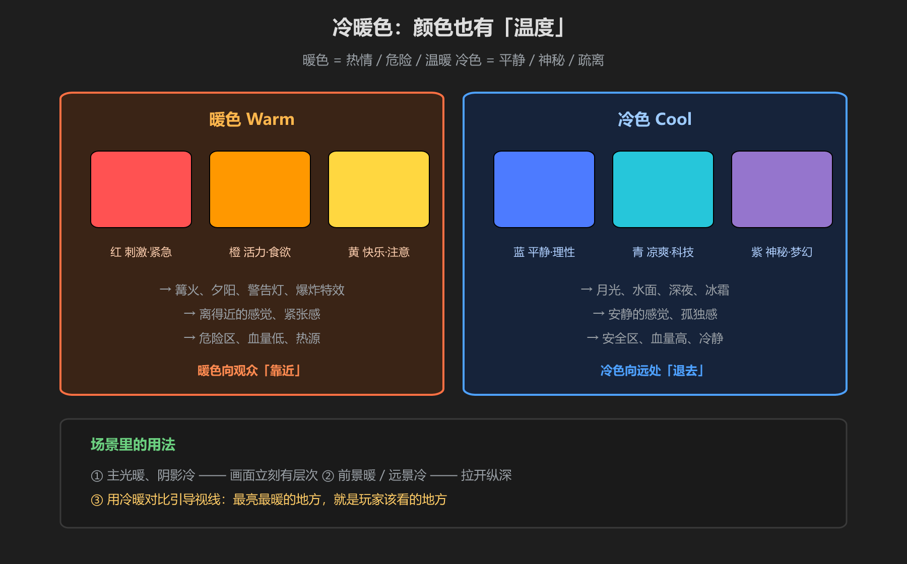
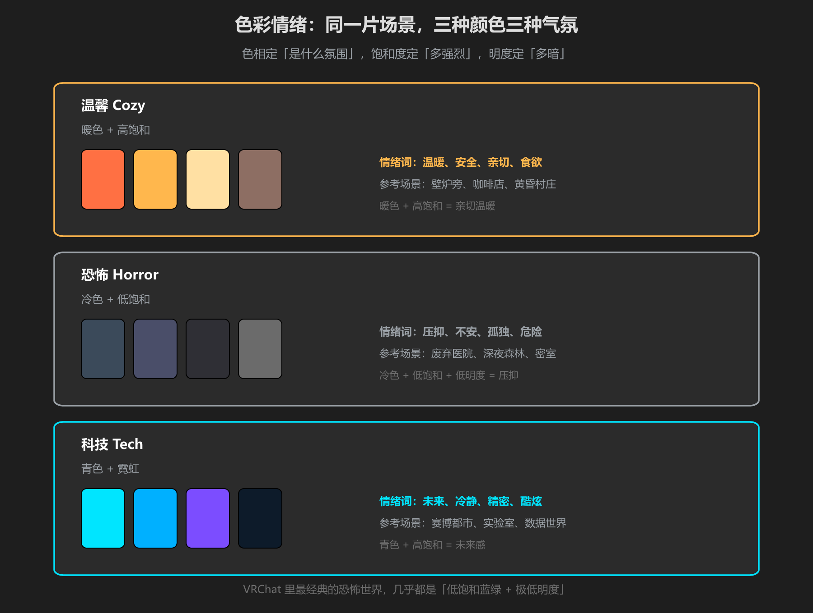

第 3 篇：色彩情绪 — 用颜色讲故事
玩家进场景的第一秒不看剧情、不看模型，先被整体颜色击中。颜色不只是「好不好看」，它是情绪语言：同一个房间，暖光让人安心，蓝绿冷光立刻变诡异。
1. 冷暖色：颜色的「温度」

图：暖色向观众「靠近」，冷色向远处「退去」
| 暖色（红橙黄） | 冷色（蓝青紫） | |
|---|---|---|
| 情绪 | 热情、活力、危险、食欲 | 平静、神秘、疏离、理性 |
| 场景 | 篝火、夕阳、爆炸、警告灯 | 月光、深夜、水面、冰霜 |
| 视觉 | 感觉近、有压迫感 | 感觉远、安静空旷 |
场景里的两个常用手法：主光暖、阴影冷（画面立刻有层次）；前景暖、远景冷（拉开纵深）。最亮最暖的地方，就是玩家该看的地方。
2. 明暗对比：光的戏剧性
明度差是比色相差更强的情感开关：
- 高对比（亮暗分明） → 紧张、戏剧、危险。恐怖场景里一盏孤灯打在暗处
- 低对比（整体灰暗或整体明亮） → 压抑或梦幻。低明度=压抑，高明度=轻松
- VRChat 的恐怖世界几乎都是「低饱和冷色 + 极低明度 + 高对比」的组合
别急着堆特效：先解决明暗对比，再谈颜色。很多「看着脏」的场景其实是明度拉不开 —— 所有物体灰蒙蒙挤在一起。把亮处提亮、暗处压暗，画面立刻干净。
3. 三种氛围配方

图：温馨 = 暖色高饱和；恐怖 = 冷色低饱和低明度；科技 = 青色霓虹
| 氛围 | 配方 | 代表作品参考 |
|---|---|---|
| 温馨 | 暖色 + 高饱和 + 中等明度 | 《动物森友会》白天、壁炉小屋类 VRChat 世界 |
| 恐怖 | 冷色 + 低饱和 + 低明度 | 《寂静岭》迷雾灰蓝、《生化危机》破败暗绿 |
| 科技 | 青色 + 霓虹高饱和 + 暗底 | 《赛博朋克 2077》青紫霓虹、《镜之边缘》纯白+青色 |
去看这些游戏时别只玩，截图 → 取色 → 看它们的 H/S/V 分布。你会发现恐怖场景 S 和 V 都低，科技场景几乎必带青色（H≈180-200°）。这就是「氛围配方」的证据。
作业思路：同一个房间摆两个版本 —— 一个暖色高饱和，一个冷色低饱和。截图对比，你会第一次真正「看见」色彩情绪的威力。
学前检查清单
- 能说出暖色和冷色各自的情绪方向
- 理解「主光暖、阴影冷」和「前景暖、远景冷」
- 能用色相/饱和度/明度描述一种氛围的配方
- 给自己的场景写了一句情绪定位（温馨？恐怖？科技？）